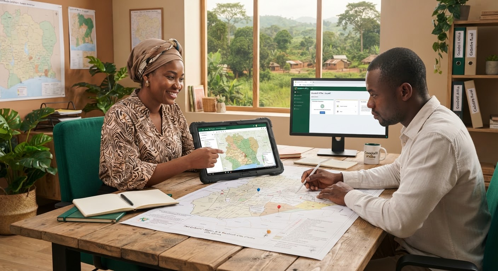

Région du Gbêkê
14 Octobre 2024 · Audit Foncier
Cadastre foncier et blockchain en Côte d'Ivoire : accélérer l'ODD 1 & 11
Une étude de cas sur la sécurisation des droits de propriété des petits exploitants agricoles pour endiguer les litiges ruraux.
Lecture : 8 min
Lire l'étude
arrow_forward